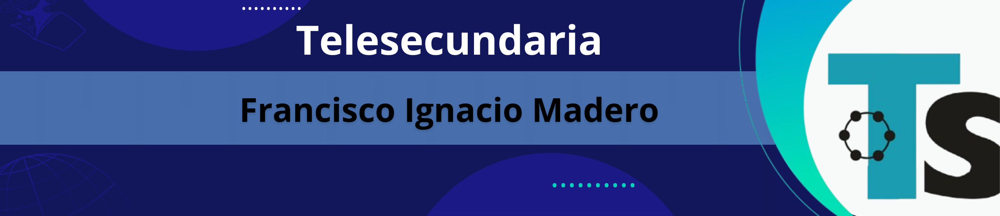
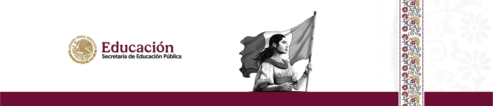
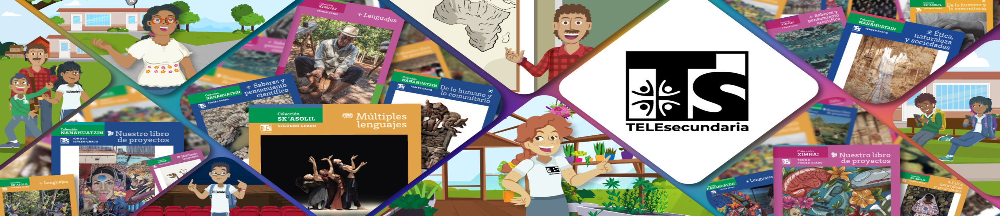

La Telesecundaria es un servicio de Educación Básica que, aliado a otros servicios del nivel, atiende a la comunidad estudiantil de Educación Secundaria. Su misión se logra mediante un modelo pedagógico caracterizado por el uso de Libros de Texto Gratuitos y materiales complementarios impresos, audiovisuales e informáticos. Una maestra o maestro organiza y construye el proceso de enseñanza en el aula para promover acuerdos y nuevos aprendizajes. Estos aprendizajes permitirán a las y los alumnos continuar estudiando y ser promotores de una mejor forma de vida de las personas que los rodea.
Ser una institución educativa de referencia en la modalidad de Telesecundaria, donde los estudiantes de la comunidad y localidades vecinas cursen, permanezcan y concluyan su educación básica con éxito. Aspiramos a formar egresados con una sólida base académica, valores y habilidades que les permitan continuar su formación profesional y enfrentar los retos del mundo actual. Nos comprometemos a asumir con ética y responsabilidad los resultados de aprendizaje, garantizando un entorno educativo con infraestructura adecuada, materiales didácticos de calidad y un ambiente de trabajo agradable. Promovemos la mejora continua del rendimiento académico mediante estrategias innovadoras, el uso eficiente de las Tecnologías de la Información y la formación constante de docentes competentes y comprometidos con la excelencia educativa.
Brindar un servicio educativo de calidad en la modalidad de Telesecundaria, asumiendo de manera colectiva la responsabilidad por los resultados de aprendizaje de todos los alumnos. Nos comprometemos con la mejora continua del aprovechamiento escolar, formando una comunidad educativa integrada y comprometida que garantice la adquisición de los aprendizajes esperados, el desarrollo de habilidades intelectuales, valores y actitudes esenciales. Nuestro objetivo es preparar a los estudiantes para una vida personal y familiar plena, una ciudadanía activa y responsable, una participación productiva en la sociedad, y el aprendizaje continuo a lo largo de su vida.